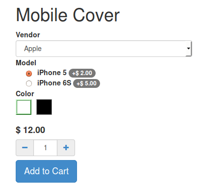
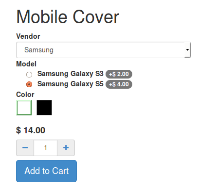
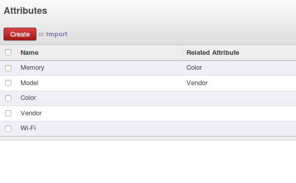

<section class="oe_container">
    <div class="oe_row oe_spaced">
        <section class="oe_container oe_dark">
            <div class="oe_row oe_padded">
                <h2 class="oe_slogan">Mega attributes</h2>
                <div class="oe_span12">
                    <p>
                This module allows you to setup related attributes. For example you can define a 'Model' attribute
                which depends on 'Vendor' attribute. So when you select a 'Vendor', only 'Model' belonging to the selected 'Vendor' is listed in E-commerce.
                    </p>
                </div>
                <div class="oe_span4">
                    <div class="oe_row_img oe_centered">
                    
                    </div>
                </div>
                <div class="oe_span4 ">
                    
                </div>
                <div class="oe_span12">
                    <h3>Attributes</h3>
                    
                </div>
            </div>
        </section>
    </div>
</section>